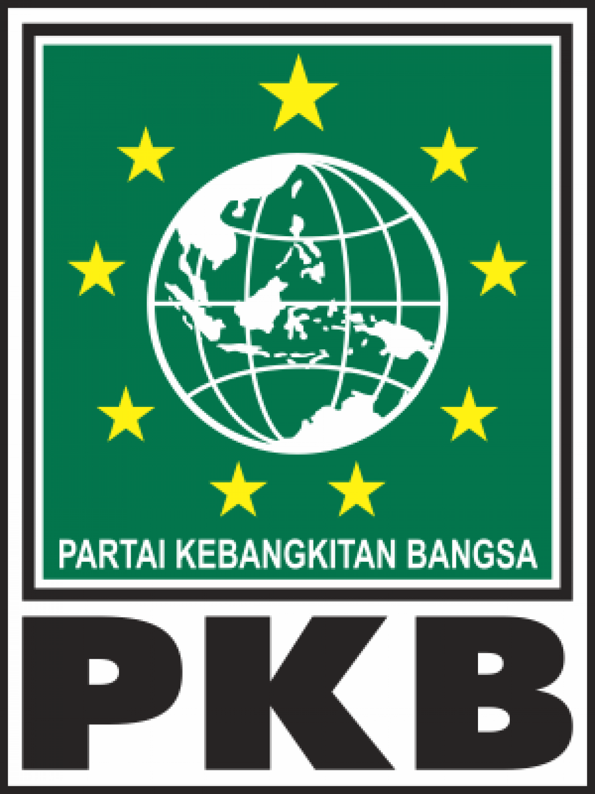

Overseas Pemilu 2019
Sovereign Voters Strong Nation
What is Overseas Pemilu 2019?
A website for informal general information of Indonesia’s national presidential and legislative parliament election 2019 for citizens living abroad.
All Legislative Candidates Group by Supporting Party
| 1 | Partai Kebangkitan Bangsa |  | ||
|---|---|---|---|---|
| No | Photo | Name | Gender | District/City |
| 1 |  |
Ahmad Iman | Male | Jakarta Timur |
| 2 | |
Imam Subali | Male | Jakarta Timur |
| 3 | |
Emieliany | Female | Jakarta Timur |
| Total: Male:4; Female:3; Female Percentage: 43% | ||||
| 2 | Partai Gerindra | |||
|---|---|---|---|---|
| No | Photo | Name | Gender | District/City |
| 1 | |
Ahmad Iman | Male | Jakarta Timur |
| 2 | |
Imam Subali | Male | Jakarta Timur |
| 3 | |
Emieliany | Female | Jakarta Timur |
| Total: Male:4; Female:3; Female Percentage: 43% | ||||
President and Vice President Candidates
| 1 | 2 | ||
|---|---|---|---|
 |
|||
| President Candidate Ir. H. Joko Widodo |
Vice President Candidate Prof. Dr. (HLC) KH. Ma’ruf Amin |
President Candidate H. Prabowo Subianto |
Vice President Candidate H. Sandiaga Salahuddin Uno |
|
Supporting Party


|
Supporting Party


|
||
|
Vision
"Realization of developed Indonesia that has sovereignty, independence and personality based on mutual cooperation" Mission
|
Vision
"The realization of the nation and state of the Republic of Indonesia which is just, prosperous religious and has sovereignty in politic, independent in the economic sector, and has strong national personality in culture and guarantee the unity among the citizen without considering the difference of tribes, religion, social background, and races based on Pancasila and 1945’s constitution." Mission
|
||